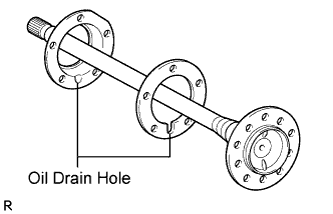
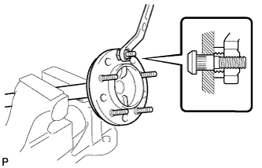
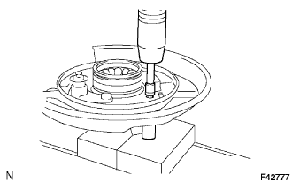
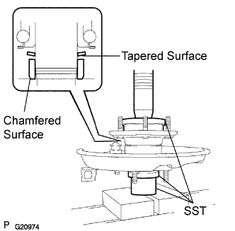

REAR AXLE SHAFT > REASSEMBLY |
| 1. INSTALL BRAKE DRUM OIL DEFLECTOR |
 |
Install a new deflector gasket and the deflector to the rear axle shaft.
 |
Temporarily install a washer and nut to 5 new hub bolts as shown in the illustration.
Install the hub bolts by tightening each nut.
Remove the washer and nut from each hub bolt.
| 2. INSTALL REAR AXLE HUB AND BEARING ASSEMBLY LH |
Position the parking brake plate on a new rear axle hub and bearing.
 |
Using 2 socket wrenches and a press, press in the 4 housing bolts.
| 3. INSTALL REAR AXLE SHAFT LH |
 |
Install the washer and a new retainer to the axle hub as shown in the illustration.
Using SST and a press, press in the rear axle shaft.
| 4. INSTALL REAR AXLE SHAFT SNAP RING LH |
 |
Using a snap ring expander, install a new snap ring.